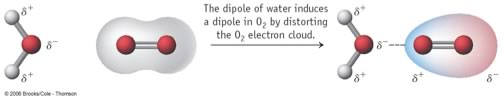

| Chapter 6.6: Temperature & Solubility |
What would you predict to be the effect of temperature on solubility? That is if you raise the temperature, does solubility of a solute increase or decrease? Based on your experience, it would be reasonable to assume that increasing temperature increases solubility. But remember both ΔH and ΔS have a role, and a temperature increase will increase the effects of changes in entropy. While dissolving solute into solvent is likely to increase entropy (if ΔS is positive), this is not always the case. Consider what happens when you heat up water on the stove. Long before the water reaches its boiling point, bubbles of gas are released from the liquid. At low temperatures these bubbles contain air (primarily N2, O2) that had been dissolved in the water. |
6.1 Solutions |
Why? because the solubility of most gases (in water) decreases with temperature. The reason can be traced back to the entropy of solution. Most gases have very small intermolecular attractions (that is why the gas molecules don’t stick together and form solids and liquids), and therefore tend not to have very high solubility in water. As an example, the solubility of O2 in water is 8.3 mg/L (25 ºC and 1 atmosphere.)  |
Questions to answer:
|
Solutions of Solids in Solids: Alloys Another type of solution occurs when two (or more) elements,
typically metals, are melted and mixed together so that their atoms
can intersperse, forming an alloy. Upon re-solidification the atoms
are now fixed in space relative to each other and the resulting alloy
will have different properties than the two separate metals. One of
the first known alloys was bronze; the major component of which is
copper, with tin as the minor component (although other elements such
as arsenic or phosphorus may also be included). The “Bronze Age”
was a significant leap forward in human history: bronze is harder and
more durable than copper, and therefore artifacts (weapons, pots, statues
etc) made from bronze were prized. Before this, the only metals available
were those that occurred naturally in their elemental form – typically
silver, copper, and gold. |
Question to answer:
Questions to ponder:
|
Is the formation of a solution a reaction? When you dissolve hydrogen chloride (HCl), a white choking
gas, in water you get an entirely new chemical substance: hydrochloric
acid (or muriatic acid as it is known in hardware stores), one of the
common strong acids. This reaction can be written: HCl(g) + H2O ↔ HCl
(aq). |
The processes by which hydrochloric acid is formed are somewhat similar to those that form a solution of sodium chloride, except that in this case it is the covalent bond between H and Cl that is broken, and a new covalent bond is formed between H and O. HCl(g) + H2O ↔ H3O+ +
Cl– |
6.1
Solutions |
| 28-Jun-2012 |